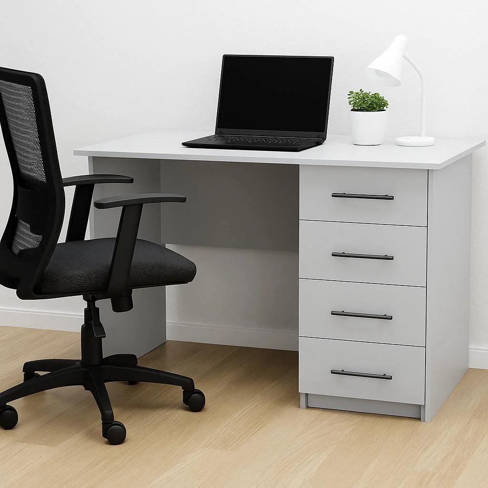

Vali üks kuuest esemest, et lugeda selle kirjeldust.
Ala 1 · rect
Sülearvuti
Sülearvuti asub laua keskel ning on selle töökoha peamine töövahend. Sellega saab kirjutada tekste, õppida programmeerimist ja otsida õppematerjale. Ekraan ja klaviatuur paiknevad ühes seadmes, mistõttu on seda lihtne kaasa võtta.
Ava selle ala eraldi leht →Ala 2 · poly
Laualamp
Laualamp paikneb sülearvutist paremal ja suunab valguse tööpinnale. See aitab näha kirjutamisel või lugemisel väikeseid detaile. Lampi saab kasutada siis, kui aknast tulevast valgusest ei piisa.
Ava selle ala eraldi leht →Ala 3 · circle
Lill potis
Roheline potitaim seisab sülearvuti ja lambi vahel. See lisab heledale töökohale värvi ning muudab ruumi hubasemaks. Taime jaoks tuleb valida sobiv valgus ja seda regulaarselt kasta.
Ava selle ala eraldi leht →Ala 4 · poly
Kirjutuslaud
Kirjutuslaud ühendab pildil olevad töövahendid üheks töökohaks. Selle pinnal on ruumi sülearvutile, lambile ja taimele. Vaba tööpind on oluline, et saaks mugavalt kirjutada ja vajalikud asjad üles leida.
Ava selle ala eraldi leht →Ala 5 · poly
Kontoritool
Kontoritool asub laua ees ning sellel on seljatugi, käetoed ja rattad. Seljatugi toetab istudes selga ning käetoed annavad kätele puhkekoha. Tooli kõrgus tuleks seada nii, et laua taga oleks mugav töötada.
Ava selle ala eraldi leht →Ala 6 · rect
Sahtliboks
Sahtliboks asub laua paremal küljel ja sisaldab nelja sahtlit. Sahtlites saab hoida vihikuid, kirjutusvahendeid ja muid tarvikuid. Nii jääb lauapind korrastatuks ning vajalikud esemed on lähedal.
Ava selle ala eraldi leht →Iga ala eraldi leht
Igal koopial on sama pildikaart ning valitud eseme kirjeldus on kohe esile tõstetud.